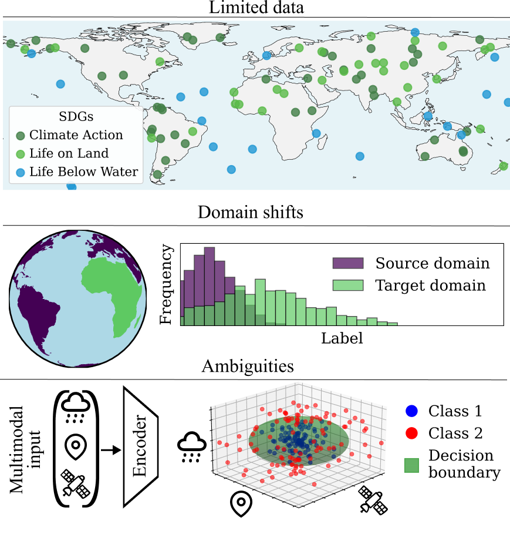
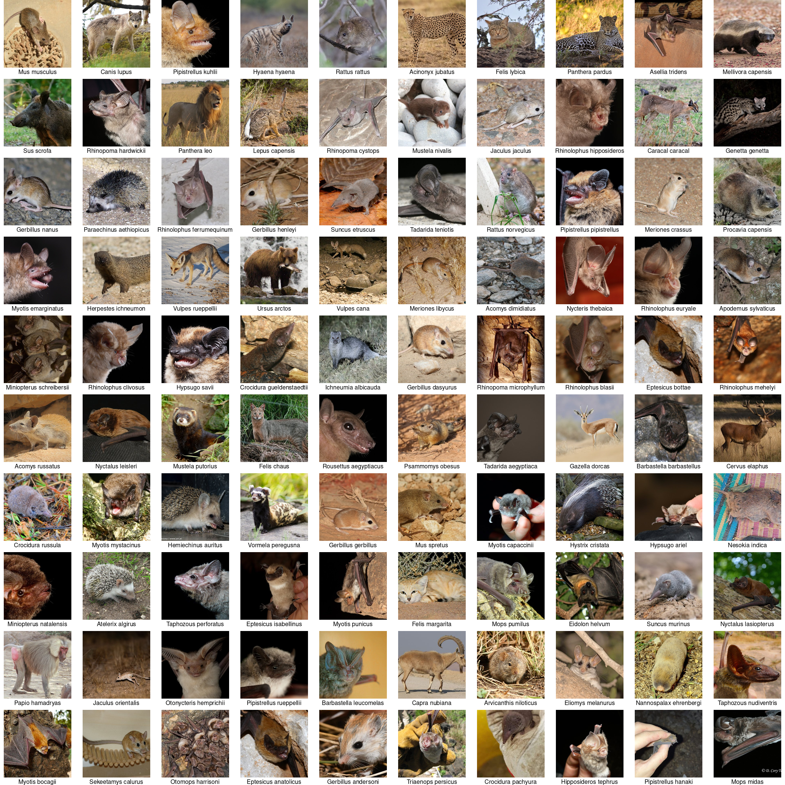

Explorer
Explore the MMEarth-Bench dataset interactively. Zoom in to view pixel-level data, hover over tiles to see tile-level data, and filter by task, split, and species.
Abstract
Recent research in geospatial machine learning has demonstrated that models pretrained with self-supervised learning on Earth observation data can perform well on downstream tasks with limited training data. However, most of the existing geospatial benchmark datasets have few data modalities and poor global representation, limiting the ability to evaluate multimodal pretrained models at global scales. To fill this gap, we introduce MMEarth-Bench, a collection of five new multimodal downstream tasks with 12 input modalities, globally distributed data, and both in- and out-of-distribution test splits. We benchmark a diverse set of pretrained models on MMEarth-Bench and find that multimodal models generally perform best. While pretraining tends to improve model robustness in limited data settings, geographic generalization abilities remain poor and using multimodal inputs at test time can sometimes lead to geographic overfitting. In order to facilitate model adaptation to new downstream tasks and geographic domains, we propose a model-agnostic method for test-time training with multimodal reconstruction (TTT-MMR) that uses all the modalities available at test time, regardless of whether the pretrained model accepts them as input. We show that TTT-MMR improves model performance on both random and geographic test splits, and that geographic batching leads to a good trade-off between regularization and specialization during TTT. Our code, dataset, and visualization tool will be released upon publication.
Motivation
Self-supervised multimodal pretraining promises to overcome the grand challenges in Earth observation. Crucial applications like the SDGs have to rely on limited and sparse (e.g., field measurements) and geographically biased (i.e., no labels for large parts of the world) training data. Furthermore, models conditioned on multiple modalities may resolve ambiguities inherent to modeling biophysical quantities with remotely sensed data.

Species
The species task in MMEarth-Bench contains 100 terrestrial mammals, shown below in order of their prevalence in the dataset.


First image description.

Second image description.

Third image description.

Fourth image description.
BibTeX
@article{gordon2026mmearth-bench,
title={Your Paper Title Here},
author={First Author and Second Author and Third Author},
journal={Conference/Journal Name},
year={2024},
url={https://your-domain.com/your-project-page}
}